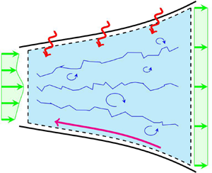

A closed-form solution is presented for internal compressible flows with an arbitrary combination of area change, heat addition, friction and non-uniform flow.
The approach assumes steady flow of a calorically perfect ideal gas using the integral form of the governing equations. It is shown that the equations reduce to a simple,
bi-quadratic equation in exit Mach number. This solution is compared to previously known solutions for Rayleigh flow, Fanno flow, isentropic flow and normal shock relations.
Theoretical solutions for sudden expansion, sudden contraction, and supersonic–supersonic two-stream constant area mixing are also presented. These solutions were found to be in
agreement with data available in the literature.